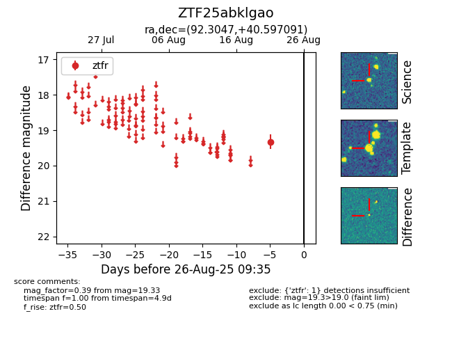

Target ZTF25abklgao at 2025-08-26 09:35, see:
FINK: fink-portal.org/ZTF25abklgao
Lasair: lasair-ztf.lsst.ac.uk/objects/ZTF25abklgao
ALeRCE: alerce.online/object/ZTF25abklgao
alt names
ZTF25abklgao (ztf,fink)
coordinates:
equatorial (ra, dec) = (92.3047,+40.59709)
galactic (l, b) = (172.2093,+9.95880)
photometry
last ztfr=19.33
1 ztfr detections
